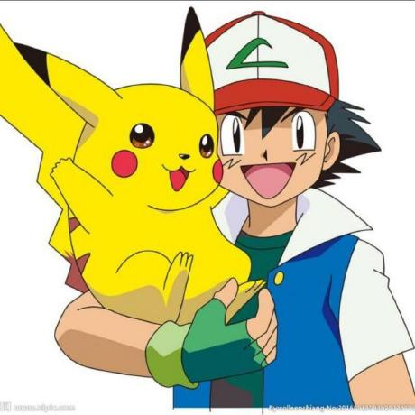

关于本站
博客简介
「织星屿」是一个开放的个人创作平台，记录技术、生活与思考。这里既有毛玻璃特效的代码笔记，也有日常随想。希望你能在这里找到有趣的内容。
关于站长
一个热爱折腾的代码爱好者，喜欢研究各种新技术，尤其钟情于 Cloudflare 生态和前端毛玻璃设计。不精通任何代码，但好在有 DeepSeek 这样的 AI 助手帮忙，让想法变成现实。
Sibyl
一个无聊但喜欢代码的家伙
贡献者

';">Sunny081209
前端优化 · 样式贡献者 · 测试工程师
建站历程
- 2026-02-20✨ 萌生想法，开始搭建首个静态版本
- 2026-02-22🎨 完成毛玻璃风格首页，确立粉色主题
- 2026-02-25🗄️ 集成 Cloudflare D1 数据库，文章动态化
- 2026-02-28👤 用户系统上线，支持注册登录
- 2026-03-01👥 添加多用户、标签、作者系统
- 2026-03-03📝 富文本编辑器集成，支持 Markdown 和 HTML 双模式
- 2026-03-05📦 草稿箱、修复模式等实用功能上线
- 2026-03-10🏷️ 标签云与作者归档页面发布
- 2026-03-15🌙 夜间模式 + 主题设置页面完成
- 2026-03-20📊 公开榜单、浏览量统计上线
- 2026-04-01🎮 文章页嵌入小游戏（猜数字、拼图等）
- 2026-04-10📱 移动端全面优化，重构首页布局
- 2026-04-18🎵 支持插入音乐、视频多媒体内容
- 2026-04-25❤️ 关于页加入彩蛋，建站历史充实
68
总文章
23
总用户
61
天运行
数据统计截止 2026-04-25
未来计划
- 📬 评论系统接入（基于 GitHub Issues 或自建）
- 🔍 全文搜索功能
- 📱 PWA 支持，可安装到手机桌面
- 🎨 更多主题皮肤（一键切换）
- 📈 个人创作中心，数据可视化
技术栈
HTML5CSS3JavaScriptFont Awesome
marked.jsCloudflare PagesCloudflare D1GitHub
QuillChart.js
致谢
感谢 DeepSeek 全程技术指导 ❤️
感谢每一位代码贡献者 ❤️
感谢每一位来访的朋友 ❤️